Profee · 2025
You can’t send money without KYC. But when people hit verification with no explanation, they leave or write to support. I mapped every place we ask for verification and redesigned how each one starts. Verification questions to support halved
Без KYC-верификации переводить деньги нельзя. Но когда человек упирается в неё без внятного объяснения, он уходит или пишет в поддержку. Я собрала все сценарии, где просят пройти верификацию, и переделала точку входа в каждом. Вопросов о верификации в поддержку стало вдвое меньше
Context
Контекст
Users send money internationally – from Europe to India, Pakistan, Uzbekistan, and other countries. AML rules require KYC (Know Your Customer) identity verification: until a user passes it, they can only send within a limit
Пользователи отправляют деньги за границу – из Европы в Индию, Пакистан, Узбекистан и другие страны. По требованиям AML каждый пользователь должен пройти KYC, то есть подтвердить личность. Пока он этого не сделал, переводить можно только в пределах лимита
Problem
Проблема
Verification surfaced in ten scenarios across app and web, each with its own copy, hierarchy and CTA label
Верификация появлялась в десяти сценариях в приложении и вебе – и в каждом были свои тексты, своя иерархия и своя кнопка
Not everyone understood what we were asking – or that they needed to verify at all. Some gave up on the app. Others asked support basic questions the UI should have answered
Не все понимали, что от них хотят, – или что верификация им вообще нужна. Кто-то бросал приложение. Кто-то шёл в чат поддержки с простыми вопросами, на которые должен был ответить интерфейс
Source: review of support chat enquiries, 2025
Источник: разбор обращений в чат поддержки, 2025
In the app, entry points ranged from vague banners to hard blocks with no explanation. The main reminder wasn’t in the app at all: an email with a link to a bot, and people told support that going from an email into a bot felt suspicious. Then there was KYC Refresh: verified users whose documents expire
В приложении точки входа были какими угодно – от невнятных баннеров до жёстких блокировок без объяснений. А главное напоминание вообще жило за пределами приложения: в письме, из которого нужно было перейти в бота. В чатах поддержки люди так и писали: переходить из письма в какого-то бота подозрительно. И отдельная история – KYC Refresh: уже проверенные пользователи, у которых истекают документы
Dear Customer,
Thank you for choosing Profee! We would like to inform you that your Profee account is currently under review. In order to finalize our standard checks on your account, we require some additional information.
We kindly ask you to provide us with a proof of address document. As proof of address we may accept one of the following:
Please ensure that the document is not older than 6 months and states your current address. Kindly note that all four corners of the document must be visible.
To fulfill these requirements, you are kindly requested to follow the instructions here: https://www.profee.com/transfer/verification
We remain at your disposal for any clarifications that you might need.
Regards,
Profee Customer Support
In every scenario the user should understand at once why verification is needed and what to do next. Success meant three things: more new users get verified, already verified users renew their documents before they expire, and fewer people ask support about verification
В любом сценарии человек сразу понимает, зачем нужна верификация и что делать дальше. Успехом считали три вещи: больше новичков проходят верификацию, уже проверенные пользователи обновляют документы до окончания срока, а с вопросами о верификации реже пишут в поддержку
Process
Процесс
Before touching a single screen, I built a complete map of all verification states across both platforms
Прежде чем рисовать экраны, я собрала карту всех состояний верификации на обеих платформах
Catalogued every place in app and web where verification could surface – ten scenarios, each with different copy and CTAs. With a Customer Experience Specialist, went through support chat enquiries to see where people got stuck and what they asked
Собрала все места в приложении и вебе, где появляется верификация, – вышло десять сценариев с разными текстами и кнопками. Вместе со специалистом по клиентскому опыту разобрала обращения в чат поддержки: где люди застревали и о чём спрашивали
For every state we agreed with the developers what to show and at which moment: a card or a sheet, when it can be closed and when it can’t. This was the hardest part of the project
Для каждого состояния договорились с разработчиками, что и в какой момент показывать: карточку или шторку, когда её можно закрыть, а когда нет. Это была самая сложная часть проекта
Solution
Решение
One entry point component in three forms – a card on the main screen, a bottom sheet mid-flow and a status banner. Each has an illustration, a clear status message and one primary action. It became part of our new design system, so app and web use the same component. Three decisions shaped it:
Один компонент точки входа в трёх формах: карточка на главном экране, шторка во время перевода и баннер статуса. В каждой – иллюстрация, понятный статус и одна главная кнопка. Компонент вошёл в новую дизайн-систему, поэтому в приложении и вебе он один и тот же. За компонентом стоят три решения:
The button is almost always Open bot – verification happens there, so people learn it once. It changes only when the bot can’t help: a limits review goes to support, extra details go to email. The bot stayed, but the way in changed: people open it from the app, on a screen that explains why, not from an email link
По умолчанию кнопка одна – «Открыть бота»: верификация проходит там, и действие достаточно запомнить один раз. Кнопка меняется, только если бот не поможет: проверка лимитов ведёт в поддержку, запрос доп. данных – в почту. Бот остался, но путь к нему стал другим: его открывают из приложения, с экрана, где объяснено, зачем, а не по ссылке из письма
While docs are only expiring, the nudge can wait: a sheet with “Do it later” and a banner the user can close. Once they’ve expired, the sheet comes back on launch and a card stays on the main screen and in the profile until the docs are updated
Пока документы только истекают, напоминание может подождать: шторка с кнопкой «Сделать позже» и баннер, который можно закрыть. Когда срок вышел, шторка появляется при каждом запуске, а карточка висит на главном экране и в профиле, пока документы не обновят
Once documents are submitted, a status banner replaces the prompt. While there’s limit left, the user keeps sending during the review. Only when the limit is used up does Continue wait for the result
Когда документы отправлены, вместо призыва появляется баннер со статусом. Пока лимит не исчерпан, человек может переводить деньги и во время проверки. Кнопка «Продолжить» ждёт результата, только когда лимит закончился
Ten states, one component in three forms – every state has exactly one place and one action
Десять состояний, один компонент в трёх формах: у каждого состояния своё место и одно действие
From “docs needed” to “we’re checking” – the main screen always shows where the user is
От «нужны документы» до «проверяем» – на главном экране всегда видно, на каком этапе человек
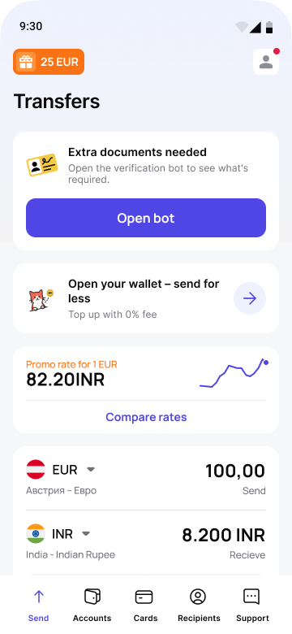
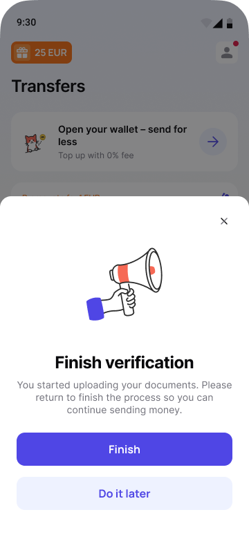
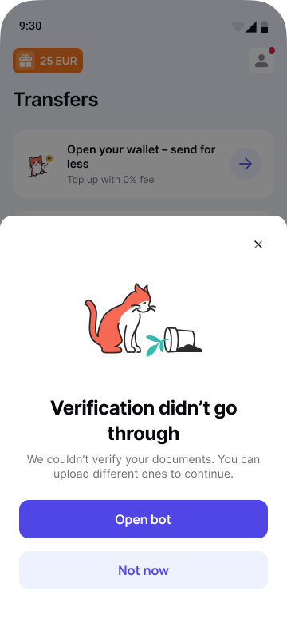
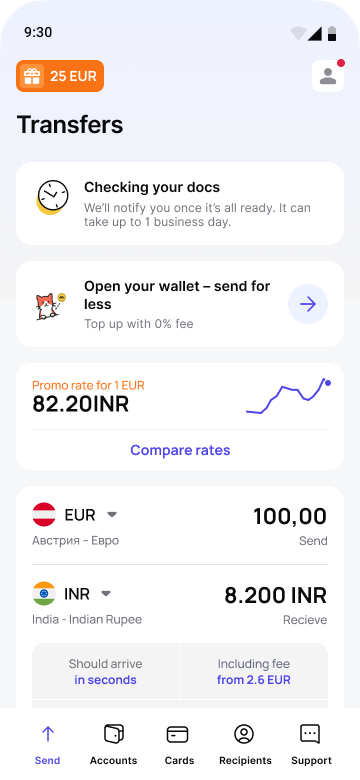
Verification surfaces right when the user tries to send. A hard stop comes only when the limit is used up – and always with the reason and one next step
Верификация появляется, когда человек отправляет деньги. Перевод останавливаем, только если лимит исчерпан, и всегда объясняем причину и даём один следующий шаг
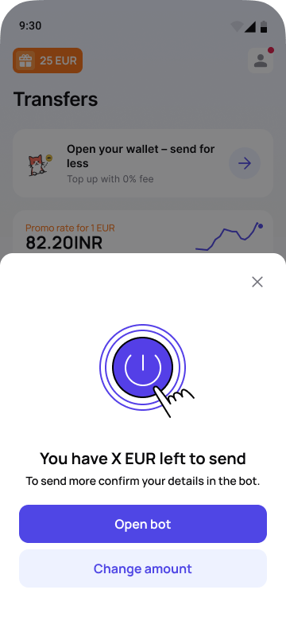
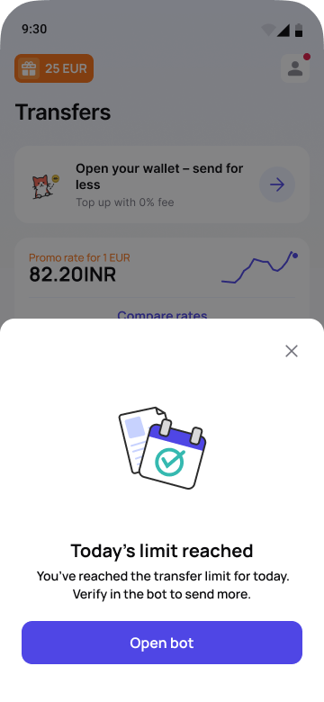
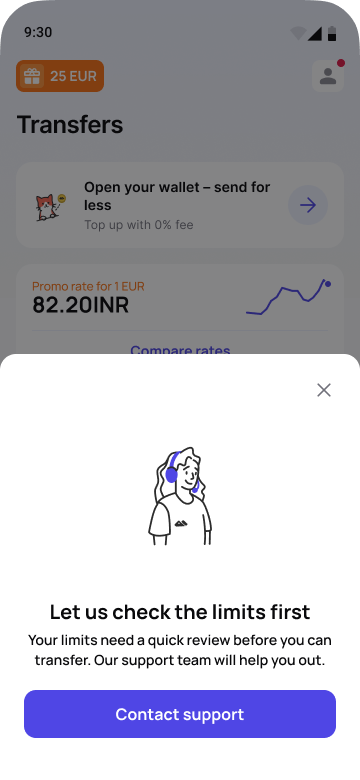
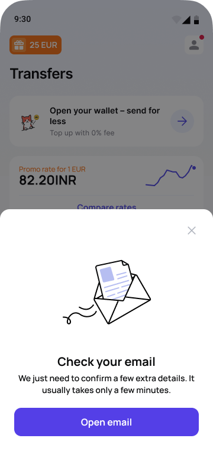
Previously verified users are nudged before their docs expire – and can’t miss it once they have. Two branches: expiring and expired
Проверенным пользователям напоминаем заранее, а когда срок вышел – пропустить напоминание уже нельзя. Две ветки: скоро истекут и уже истекли
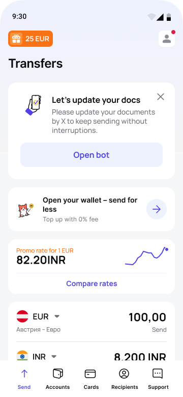
First-time verification, mid-transfer limits and KYC Refresh, rendered in the mobile browser on the Send money screen: same illustrations, same copy and the same actions as in the app
Первая верификация, лимиты во время перевода и KYC Refresh в мобильном браузере, на экране отправки денег. Иллюстрации, тексты и действия – те же, что в приложении
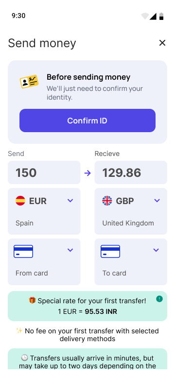
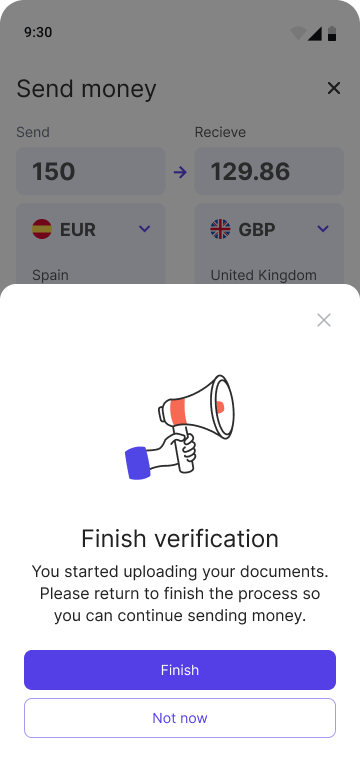
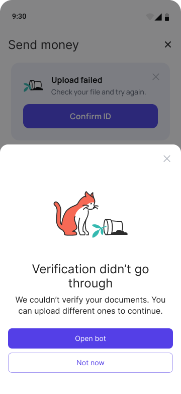
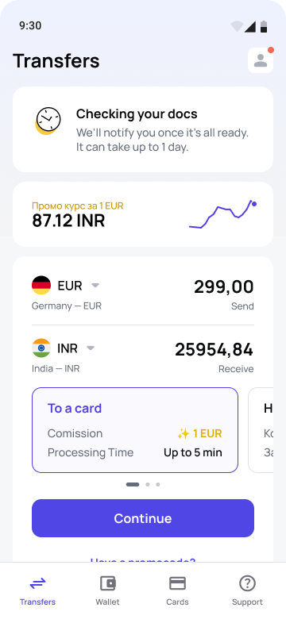
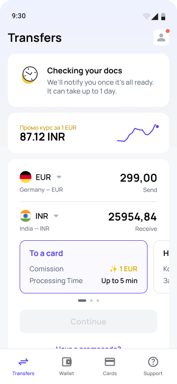
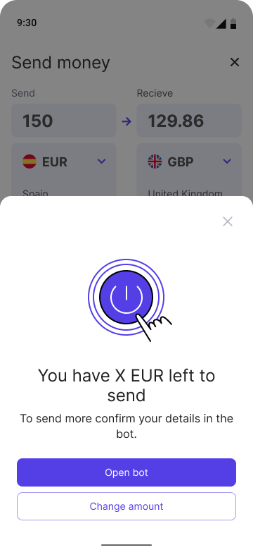
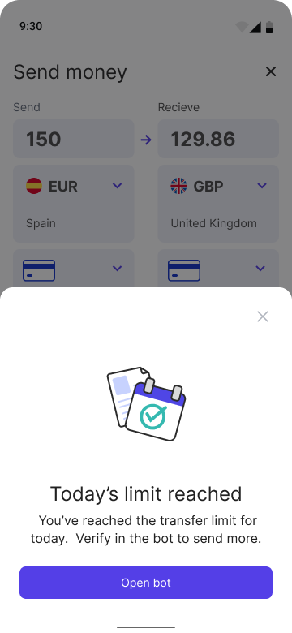
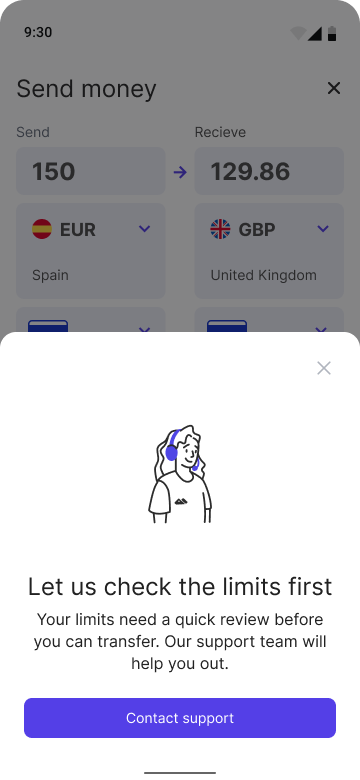
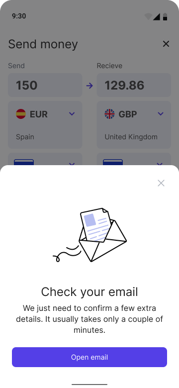
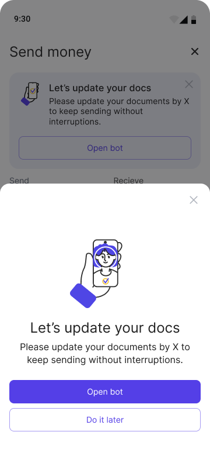
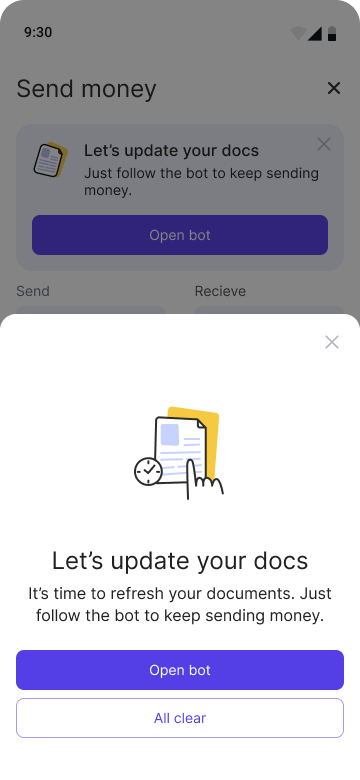
Results
Результаты
Tickets tagged as verification, June–July 2025 against November–December 2025. There were 52% fewer of them, while new users grew by 5% – so per 1,000 new users:
Обращения с тегами верификации за июнь–июль и ноябрь–декабрь 2025. Их стало на 52% меньше, а новичков пришло на 5% больше – поэтому на каждую тысячу новичков:
The questions the interface should have answered now get answered in the interface: the card explains why verification is needed and gives one next step
На вопросы, на которые должен был отвечать интерфейс, теперь отвечает интерфейс: карточка объясняет, зачем нужна верификация, и даёт один следующий шаг
Before, the main entry point was an email – Amplitude doesn’t see it, so there’s no clean “before” to compare with. But the card rolled out in steps: Android on 30 July 2025, iOS on 4 September, the rest in October. So each platform became the control for the other – same season, but only one of them had the card:
Раньше главной точкой входа было письмо, а письма Amplitude не видит, так что честного «до» для сравнения нет. Зато карточку запускали по очереди: Android – 30 июля 2025, iOS – 4 сентября, остальное – в октябре. Поэтому платформы стали контрольной группой друг для друга: сезон один, а карточка есть только у одной:
Before the card, Android trailed iOS by 0.6–1.2 pp every month. The gap moved towards whichever platform had the card, and once both had it, it went back to its usual size
До карточки Android каждый месяц отставал от iOS на 0,6–1,2 п. п. Разрыв каждый раз смещался в пользу платформы, где уже была карточка, а когда она появилась на обеих, вернулся к обычному
For already verified users the question is different: do they renew in time? Users who first saw the “docs expiring” card from August 2025 to May 2026:
Для уже проверенных пользователей вопрос другой: успевают ли они обновить документы вовремя. Из тех, кто впервые увидел карточку «Документы скоро истекут» с августа 2025 по май 2026:
The card that stays gets noticed straight away: 43% of those who see it tap it, with a median of 12 seconds. The people we lose are the quarter who never come back to the app
Карточку, которую нельзя закрыть, замечают сразу: 43% увидевших нажимают на неё, медиана – 12 секунд. Теряем мы тех, кто в приложение больше не возвращается, – это каждый четвёртый
How I measured it: there was no A/B test, so these numbers are estimates from the staggered rollout, Amplitude and support tags. The card helped the platform that had it, but the total number of verifications over the quarter stayed flat, so I don’t claim more verified users overall
Как считала: A/B-теста не было, поэтому это оценки по поэтапной раскатке, Amplitude и тегам поддержки. Карточка помогала той платформе, где появилась, но общее число верификаций за квартал не изменилось, так что я не утверждаю, что верифицированных в целом стало больше
Trade-off
Компромисс
From the early rollout (Aug–Sep) to the full launch (Nov–Dec) clicks grew by 72%, completions after the click only by 10% – about one new completion for every ten new clicks. Click-to-completion conversion fell from 74% to 47% because the funnel now holds people who never reached it before: a third of the Nov–Dec clicks came from Check your email, a request that used to live only in the letter. The entry points now bring people in – we lose them after the click, and that’s where the next iteration goes
От ранней раскатки (август–сентябрь) до полного запуска (ноябрь–декабрь) нажатий стало на 72% больше, а завершений после нажатия – всего на 10%: примерно одно новое завершение на десять новых нажатий. Конверсия из нажатия в пройденную верификацию упала с 74% до 47%: в воронку попали те, кто раньше до неё вообще не доходил. Треть нажатий в ноябре–декабре пришла из «Проверьте почту» – запроса, который раньше был только в письме. Точки входа приводят людей, а теряем мы их уже после нажатия – туда и пойдёт следующая итерация
Reflection
Выводы
Not every exception could be designed away. A limits review still goes to support and extra documents still go to email – the bot can’t handle them yet, for technical reasons. That friction is real. But each exception now explains why it happens and gives one clear next step
Не все исключения удалось убрать дизайном. С проверкой лимитов человек по-прежнему уходит в поддержку, а с дополнительными документами – на почту: бот пока не умеет их обрабатывать по техническим причинам. Это неудобство никуда не делось. Зато теперь каждое исключение объясняет, почему так, и даёт один понятный следующий шаг
Along with the entry points we launched a sheet right after a successful transfer: you’re close to your limit, verify now to keep sending. Almost everyone closed it – nobody wants to take care of their future self the moment a transfer goes through – so we dropped it. A limit reminder works when the limit gets in the way: at the moment of sending
Вместе с точками входа мы запустили шторку сразу после успешного перевода: лимит почти исчерпан, пройдите верификацию сейчас. Почти все её закрывали – когда перевод только что прошёл, о следующем думать не хочется, – и мы её убрали. Напоминание о лимите работает тогда, когда лимит мешает, то есть в момент отправки
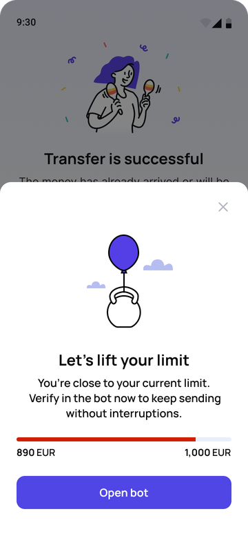
If I’d had more time, I’d have gone after the people who miss the deadline. About a quarter never open the app again once their documents expire, so no card inside the app can reach them – it needs a channel outside it
Будь у меня больше времени, я бы разобралась с теми, кто пропускает срок. Примерно каждый четвёртый после истечения документов в приложение больше не заходит, и карточка внутри до него не дотянется – нужен канал снаружи
Extra documents are still requested by email and checked by support by hand – that is being automated now. The longer goal is to bring the whole verification into the app: upload documents, see their status and fix problems there, without leaving for the bot – that’s where we lose people after the click
Дополнительные документы пока запрашивают письмом, а проверяет их поддержка вручную – сейчас мы это автоматизируем. А в перспективе – перенести верификацию в приложение целиком: загружать документы, следить за статусом и решать проблемы прямо там, без перехода в бота – именно там мы теряем людей после нажатия